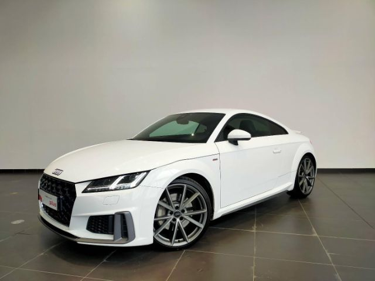

Audi TT
- 🔧 Moteur : 2.0L TFSI – 197 à 320 ch
- ⚡ 0–100 km/h : entre 4.5s et 6.6s
- ⛽ Consommation : environ 7.0 l/100km
- 📐 Dimensions : 4.19m x 1.83m x 1.35m
- 🎛️ Équipements : Audi Virtual Cockpit, transmission quattro, sièges sport, système audio Bang & Olufsen
Audi TT est un coupé sportif au design iconique, offrant une expérience de conduite dynamique.